The complete mixer atlasEl atlas completo de mixers
Every unordered pair of the 54 registered mixers, plus 168 ablations and 54 single-mixer baselines — trained on one CPU host, measured end to end and charted. The matrix is complete: 1,431 of 1,431 cells.Todos los pares no ordenados de los 54 mixers registrados, más 168 ablaciones y 54 líneas base de un solo mixer — entrenados en un solo host de CPU, medidos de extremo a extremo y graficados. La matriz está completa: 1.431 de 1.431 celdas.
Executive summaryResumen ejecutivo
Round 3 closes the matrix that Round 2 left open. It trains every unordered pair of the 54 registered mixers — C(54,2) = 1,431 cells, none missing — plus 54 single-mixer baselines and 168 ablation runs that move one switch at a time: optimizer, normalization, positional encoding, Mixture-of-Experts routing, residual path, task and model class. All of it on one CPU host, in 7 calendar days, for 3,668 hours of training wall time.La ronda 3 cierra la matriz que la ronda 2 dejó abierta. Entrena todos los pares no ordenados de los 54 mixers registrados — C(54,2) = 1,431 celdas, sin ninguna ausente — más 54 líneas base de un solo mixer y 168 corridas de ablación que mueven un interruptor a la vez: optimizador, normalización, codificación posicional, enrutamiento MoE, camino residual, tarea y clase de modelo. Todo en un solo host de CPU, en 7 días calendario, por 3,668 horas de tiempo de pared de entrenamiento.
falcon2a + conformer at 7.736 nats, and the worst is nsa + lsa at 9.92 — a spread wider than any ablation moves the loss. The second mixer is the lever: the median loss spans 0.882 nats across B roles against 0.804 across A roles. At 8 and 4 bits quantization is free (sample agreement 99.5% and 91.8%), while 2-bit weights change the model (20.8%).falcon2a + conformer con 7.736 nats y el peor es nsa + lsa con 9.92 — una dispersión mayor que la de cualquier ablación. El segundo mixer es la palanca: la pérdida mediana abarca 0.882 nats entre roles B frente a 0.804 entre roles A. Con 8 y 4 bits la cuantización es gratis (acuerdo por muestra 99.5 % y 91.8 %), mientras que los pesos de 2 bits cambian el modelo (20.8 %).- The grid is completeLa rejilla está completa
1,431 of 1,431 cells trained. The tenengrampairs that crash are still cells of the atlas; they simply have no loss, which is why the matrix shows ten holes.1,431 de 1,431 celdas entrenadas. Los diez pares conengramque fallan siguen siendo celdas del atlas; simplemente no tienen pérdida, y por eso la matriz muestra diez huecos. - The second mixer is the leverEl segundo mixer es la palanca
Across roles, the median loss spans 0.882 nats for B (bestconformerat 8.168, worstmambaat 9.051) and 0.804 for A. The same asymmetry that Experiment 2 measured at 100 epochs survives at 500.Entre roles, la pérdida mediana abarca 0.882 nats para B (mejorconformercon 8.168, peormambacon 9.051) y 0.804 para A. La misma asimetría que el Experimento 2 midió a 100 épocas sobrevive a 500. - Size helps but does not decideEl tamaño ayuda pero no decide
Parameter count correlates with final loss at ρ = -0.42 and with held-out quality at ρ = +0.14. The largest run (1.96 M parameters) is not the best, and the cheapest mixers sit on both sides of the median.El número de parámetros correlaciona con la pérdida final en ρ = -0.42 y con la calidad retenida en ρ = +0.14. La corrida más grande (1.96 M de parámetros) no es la mejor, y los mixers más baratos se reparten a ambos lados de la mediana. - Learning is fast; the ranking is decided earlyEl aprendizaje es rápido; el ranking se decide temprano
The median pair reaches 90% of its loss drop at 41% of the schedule, and the per-pair loss at a quarter of the schedule already ranks the pairs with ρ = 0.62 against the final order. Every curve is still descending when the schedule ends.El par mediano alcanza el 90 % de su caída de pérdida al 41 % del calendario, y la pérdida por par a un cuarto del calendario ya ordena los pares con ρ = 0.62 frente al orden final. Todas las curvas siguen bajando cuando termina el calendario. - Gradient pressure is block-specificLa presión del gradiente es específica por bloque
The head carries the largest gradient (3.66), then attention (2.12) and the FFN (0.71); embeddings and normalization are an order of magnitude smaller. The active blocks keep a coefficient of variation below 0.35, and clipping is routine: the median clip ratio is 1.04.La cabeza soporta el gradiente mayor (3.66), luego la atención (2.12) y la FFN (0.71); los embeddings y la normalización son un orden de magnitud menores. Los bloques activos mantienen un coeficiente de variación por debajo de 0,35, y el recorte es rutina: la mediana del cociente es 1.04. - Quantization: 8 and 4 bits are free, 2 bits is notCuantización: 8 y 4 bits son gratis, 2 bits no
Against the unquantized export,q8_0_v2changes the top-1 by +0.07 pp and leaves 99.2% of the pairs unchanged;q4_0_v2changes it by +0.33 pp with 94.5% unchanged;i2_s_v2loses 2.03 pp and degrades 18.7% of the pairs.Frente a la exportación sin cuantizar,q8_0_v2cambia el top-1 en +0.07 pp y deja sin cambios el 99.2 % de los pares;q4_0_v2lo cambia en +0.33 pp con el 94.5 % sin cambios;i2_s_v2pierde 2.03 pp y degrada el 18.7 % de los pares.
What was run, and how to read itQué se corrió y cómo leerlo
Experiment 3 is the same harness as Experiment 2 with the grid completed and the schedule extended to 500 epochs. Every configuration asks for 500 epochs, but the harness stops runs earlier — by schedule, plateau criterion or an ablation-specific cap: 734 runs reached the end and 919 stopped sooner. The 44 runs that stopped before epoch 100 (fifteen five-epoch MoE routing tests, the BitNet/GGUF conversion, twenty-two truncated pairs and a few switches) are excluded from every loss, dynamics, gradient and correlation comparison; they stay in the population and the compute ledger.El Experimento 3 es el mismo arnés que el Experimento 2 con la rejilla completa y el calendario extendido a 500 épocas. Todas las configuraciones piden 500 épocas, pero el arnés detiene corridas antes — por calendario, criterio de meseta o un tope específico de la ablación: 734 corridas llegaron al final y 919 se detuvieron antes. Las 44 corridas que se detuvieron antes de la época 100 (quince pruebas de enrutamiento MoE de cinco épocas, la conversión BitNet/GGUF, veintidós pares truncados y algunos interruptores) quedan excluidas de toda comparación de pérdida, dinámica, gradiente y correlación; permanecen en la población y en el registro de cómputo.
Deployment is excluded on purpose. The deployer received the dataclass stored in the checkpoint where it expected a mapping and called .get() on it, so 822 of the 1,334 deploy records failed. Measuring a broken stage would confound a serialization bug with quantization quality; the quantized analysis therefore uses the Transformers-export path, which exported 4,686 models with no failures.El despliegue se excluye a propósito. El desplegador recibió la dataclass guardada en el checkpoint donde esperaba un diccionario y le llamó .get(), así que 822 de los 1.334 registros de despliegue fallaron. Medir una etapa rota confundiría un error de serialización con la calidad de la cuantización; por eso el análisis cuantizado usa la ruta de exportación a Transformers, que exportó 4.686 modelos sin fallos.
The population by family is below. Smoke counts the runs shorter than 100 epochs; the loss and cost columns are computed over the remaining 1,609 runs. The tokenizer, task and real-data families run different tasks, so their losses are not comparable with MLM.La población por familia está abajo. Humo cuenta las corridas de menos de 100 épocas; las columnas de pérdida y coste se calculan sobre las 1,609 corridas restantes. Las familias de tokenizadores, tareas y datos reales corren tareas distintas, así que sus pérdidas no son comparables con MLM.
| FamilyFamilia | RunsCorridas | SmokeHumo | ParamsParámetros | Final lossPérdida final | min/Mparammin/Mparám |
|---|---|---|---|---|---|
| hybrid pairspares híbridos | 1,431 | 22 | 318,784 | 8.78 | 422 |
| single mixersmixers únicos | 54 | 0 | 255,092 | 9.00 | 547 |
| optimizersoptimizadores | 39 | 0 | 309,568 | 9.32 | 311 |
| ViT PE ablationsablaciones de PE del ViT | 39 | 0 | 348,458 | 1.00 | 208 |
| architecture switchesinterruptores de arquitectura | 23 | 4 | 309,568 | 8.94 | 318 |
| text PE ablationsablaciones de PE de texto | 12 | 1 | 309,568 | 8.83 | 297 |
| vision taskstareas de visión | 9 | 0 | 337,298 | 1.00 | 244 |
| normalizationnormalización | 6 | 0 | 309,328 | 8.94 | 237 |
| MoE variantsvariantes MoE | 17 | 15 | 366,160 | 8.87 | 556 |
| task switchesinterruptores de tarea | 4 | 0 | 309,568 | 6.43 | 265 |
| real-data runsejecuciones con datos reales | 8 | 0 | 329,013 | 1.10 | 85 |
| batch sizetamaño de lote | 2 | 0 | 309,568 | 8.67 | 238 |
| audio taskstareas de audio | 4 | 1 | 447,671 | 1.10 | 24 |
| tokenizerstokenizadores | 4 | 0 | 309,568 | 6.13 | 31 |
1 · The parameter landscape1 · El paisaje de parámetros
The 1,653 runs span 147,171 to 1,957,440 parameters, with a median of 315,744. Embeddings and the output head are fixed costs of roughly 31% each; attention takes 25% and the FFN 12%, so the architectural choice moves a quarter of the budget. The cheapest second mixers are mamba, ccgqa and cca (around 0.29 M); the most expensive are gmla (1.67 M), engram (0.60 M) and mfa (0.54 M).Las 1,653 corridas abarcan de 147,171 a 1,957,440 parámetros, con una mediana de 315,744. Los embeddings y la cabeza de salida son costes fijos de aproximadamente 31 % cada uno; la atención toma 25 % y la FFN 12 %, así que la decisión arquitectónica mueve un cuarto del presupuesto. Los segundos mixers más baratos son mamba, ccgqa y cca (unos 0,29 M); los más caros son gmla (1,67 M), engram (0,60 M) y mfa (0,54 M).
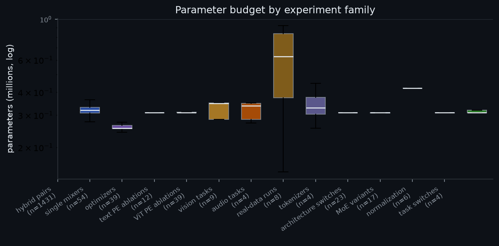
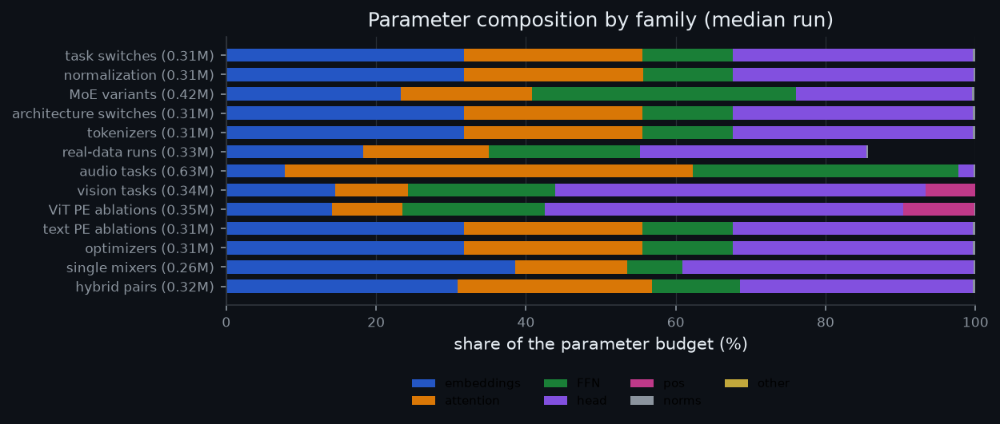
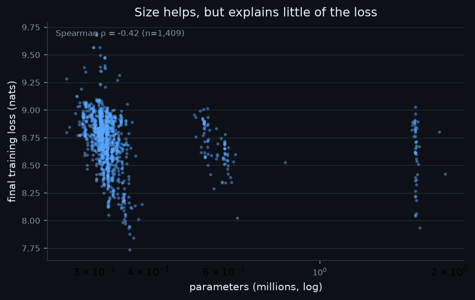
Size helps, but it explains only a sixth of the ranking (ρ = -0.42 over 1,431 pairs). Within the same budget, architecture decides more than scale — the same conclusion as Round 2, now measured on the complete grid.El tamaño ayuda, pero explica solo una sexta parte del orden (ρ = -0.42 sobre 1,431 pares). Con el mismo presupuesto, la arquitectura decide más que la escala — la misma conclusión de la ronda 2, ahora medida sobre la rejilla completa.
2 · Training outcomes2 · Resultados de entrenamiento
The hybrid pairs end at a median final loss of 8.78 nats, from 7.74 to 9.70. The ten best pairs are listed below; the difference between the best and the worst pair is larger than the difference between the best and the median optimizer, normalization or positional-encoding ablation. The mixer stack is the dominant design decision of the round.Los pares híbridos terminan con una pérdida final mediana de 8.78 nats, de 7.74 a 9.70. Los diez mejores pares están abajo; la diferencia entre el mejor y el peor par es mayor que la diferencia entre la mejor ablación de optimizador, normalización o codificación posicional y la mediana de su familia. La pila de mixers es la decisión de diseño dominante de la ronda.
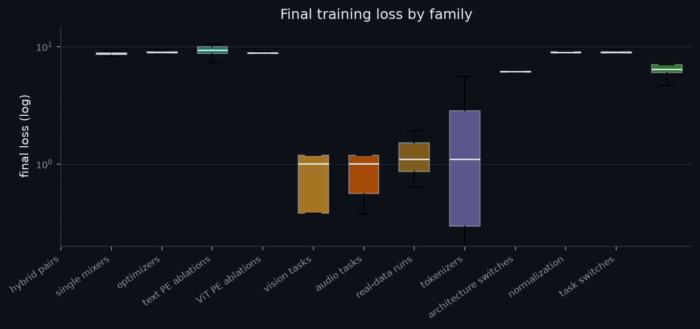
Held-out quality comes from the export path: 662 configurations produced Hugging Face rows, 653 of them MLM pairs. The mean top-1 is 4.46% and the mean top-5 is 24.0%, with a median top-5 of 28.6%: a few pairs learned something, most did not. The rank correlation between final training loss and held-out top-5 is only +0.14, so training loss is not a leaderboard.La calidad retenida viene de la ruta de exportación: 662 configuraciones produjeron filas de Hugging Face, 653 de ellas pares MLM. El top-1 medio es 4.46 % y el top-5 medio es 24.0 %, con una mediana de top-5 de 28,6 %: unos pocos pares aprendieron algo, la mayoría no. La correlación de rango entre pérdida final de entrenamiento y top-5 retenido es solo +0.14, así que la pérdida de entrenamiento no es una tabla de líderes.
3 · Learning dynamics3 · Dinámica de aprendizaje
The median pair starts at 10.50 nats and ends at 8.78; the P10–P90 band at the end is 8.41–8.97. Most of the reduction happens in the first quarter: 9.47 at 25% of the schedule, 8.92 at half, 8.75 at three quarters. The curves are still descending when the schedule ends, so the round measures learning speed, not converged quality.El par mediano empieza en 10.50 nats y termina en 8.78; la banda P10–P90 al final es 8.41–8.97. La mayor parte de la reducción ocurre en el primer cuarto: 9.47 al 25 % del calendario, 8.92 a la mitad, 8.75 a las tres cuartas partes. Las curvas siguen bajando al terminar el calendario, así que la ronda mide velocidad de aprendizaje, no calidad convergida.
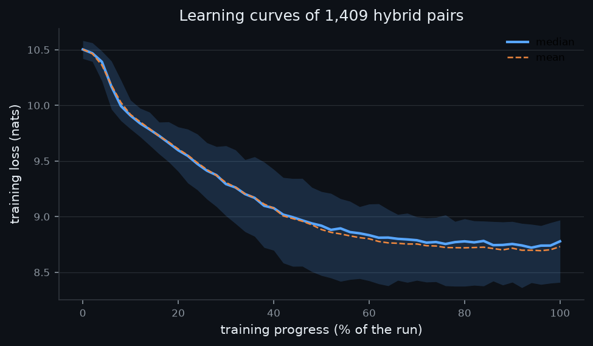
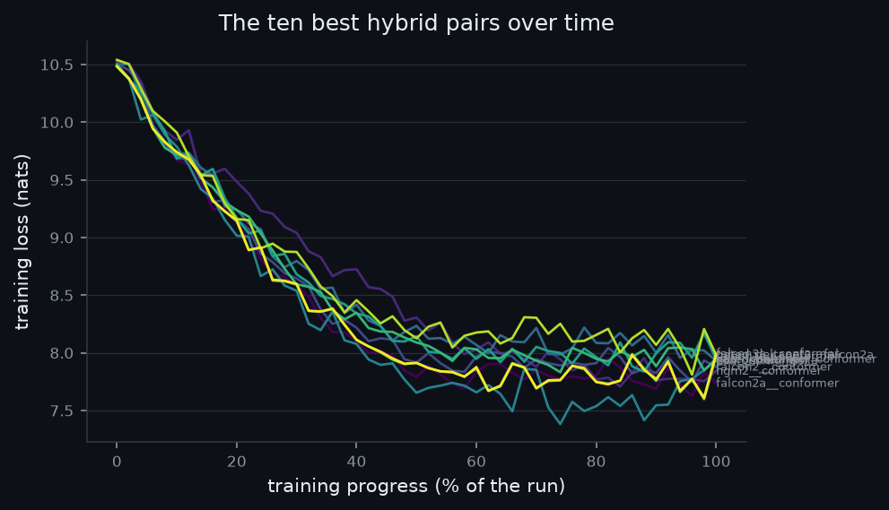
By a quarter of the schedule the per-pair loss already ranks the pairs with ρ = 0.62 against the final order, and the ten best separate from the population before the halfway mark. The number of epochs needed to reach 90% of a run's loss drop confirms it: the median is 41% of the schedule, from 40% for hybrid pairs to 21% for vision tasks.Al cuarto del calendario la pérdida por par ya ordena los pares con ρ = 0.62 frente al orden final, y los diez mejores se separan de la población antes de la mitad. El número de épocas necesarias para alcanzar el 90 % de la caída de pérdida lo confirma: la mediana es el 41 % del calendario, desde el 40 % de los pares híbridos hasta el 21 % de las tareas de visión.
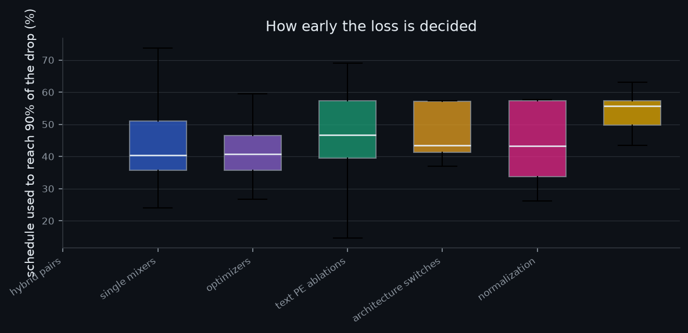
4 · Gradient pressure per block4 · Presión del gradiente por bloque
The trainer logs the post-clip L2 norm of every parameter block: embeddings, positional encoding, attention, FFN, normalization, head, mHC, router, residual and other. The head carries the largest gradient, then attention and the FFN; embeddings and normalization are an order of magnitude smaller. The ordering is stable across the whole campaign, which is why the per-block optimizer groups are not cosmetic.El entrenador registra la norma L2 post-recorte de cada bloque de parámetros: embeddings, codificación posicional, atención, FFN, normalización, cabeza, mHC, router, residual y otros. La cabeza soporta el gradiente mayor, luego la atención y la FFN; los embeddings y la normalización son un orden de magnitud menores. El orden es estable en toda la campaña, y por eso los grupos por bloque del optimizador no son cosméticos.
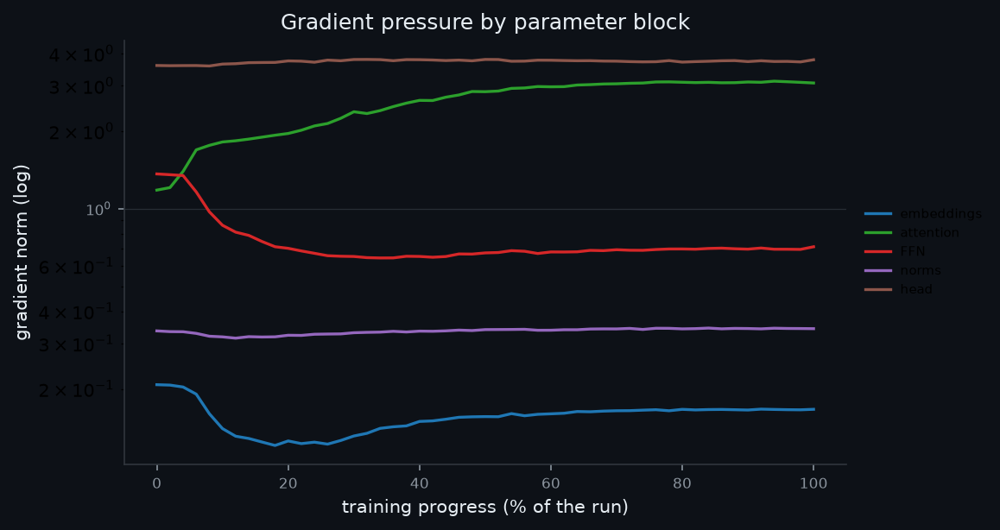
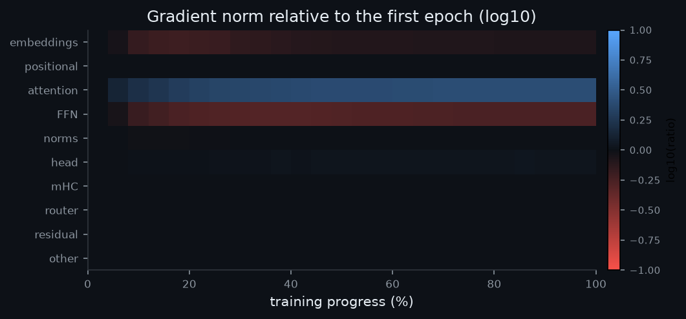
| BlockBloque | MeanMedia | FinalFinal | CVCV | ActiveActivo |
|---|---|---|---|---|
| embeddingsembeddings | 0.152 | 0.163 | 0.27 | 99.9% |
| positionalposicional | 0.000 | 0.000 | 1.79 | 3.5% |
| attentionatención | 2.121 | 2.503 | 0.22 | 100.0% |
| FFNFFN | 0.709 | 0.674 | 0.31 | 100.0% |
| normsnormalización | 0.326 | 0.336 | 0.13 | 99.9% |
| headcabeza | 3.657 | 3.733 | 0.13 | 100.0% |
| mHCmHC | 0.000 | 0.000 | 0.03 | 0.1% |
| routerrouter | 0.000 | 0.000 | 0.50 | 1.2% |
| residualresidual | 0.000 | 0.000 | 0.82 | 0.1% |
| otherotros | 0.000 | 0.000 | n/a | 0.0% |
The heatmap tells the same story over time: the head is flat, attention grows slightly, and the FFN decays by a factor of about two over the first half before stabilizing; embeddings decay as the vocabulary statistics are learned. Nothing explodes: no NaN steps in the whole campaign, 109 Inf steps (all repaired in place, in 15 runs), and a gradient coefficient of variation that is inversely related to the final loss (-0.61).El mapa de calor cuenta la misma historia en el tiempo: la cabeza es plana, la atención crece ligeramente y la FFN decae por un factor de aproximadamente dos durante la primera mitad antes de estabilizarse; los embeddings decaen a medida que se aprenden las estadísticas del vocabulario. Nada explota: ningún paso con NaN en toda la campaña, 109 pasos con Inf (todos reparados en el sitio, en 15 corridas) y un coeficiente de variación del gradiente inversamente relacionado con la pérdida final (-0.61).
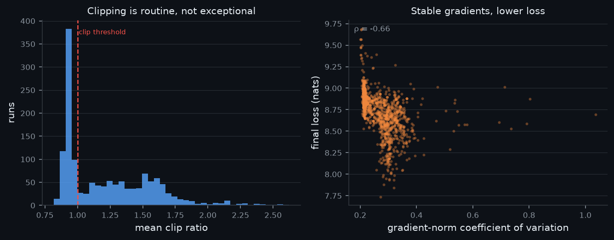
Clipping is routine, not exceptional: the median mean clip ratio is 1.04 — just above the threshold of 1 — and 51.6% of the runs clip on average, with a P90 of 1.65. Round 2 reported a median of 0.90 and clipping as a rare event; the difference is the longer schedule and the higher learning rates of Round 3.El recorte es rutina, no excepción: la mediana del cociente de recorte medio es 1.04 — justo por encima del umbral 1 — y el 51.6 % de las corridas recortan de media, con un P90 de 1.65. La ronda 2 reportó una mediana de 0,90 y un recorte excepcional; la diferencia es el calendario más largo y las tasas de aprendizaje más altas de la ronda 3.
5 · Throughput and cost5 · Rendimiento y coste
Training time grows only weakly with parameters: a log-log fit over the MLM pairs gives an exponent of 0.25 with R² = 0.06. The clock is dominated by the number of steps, not by the parameter count. The normalised cost is the fair comparison: the median run spends 402 minutes per million parameters, with family medians spanning a factor of about three.El tiempo de entrenamiento crece solo débilmente con los parámetros: un ajuste log-log sobre los pares MLM da un exponente de 0.25 con R² = 0.06. El reloj lo domina el número de pasos, no el de parámetros. El coste normalizado es la comparación justa: la corrida mediana gasta 402 minutos por millón de parámetros, con medianas por familia que abarcan un factor de aproximadamente tres.
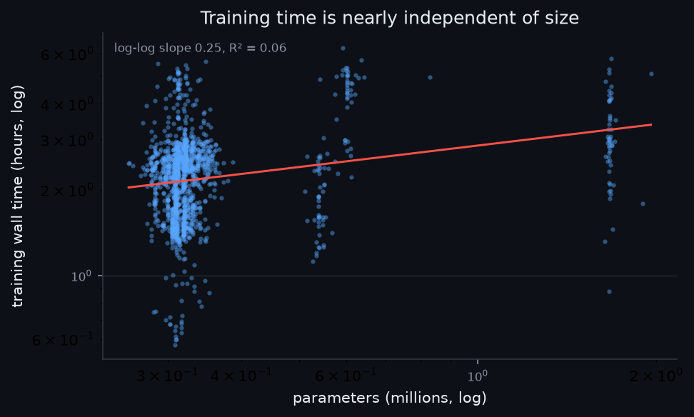
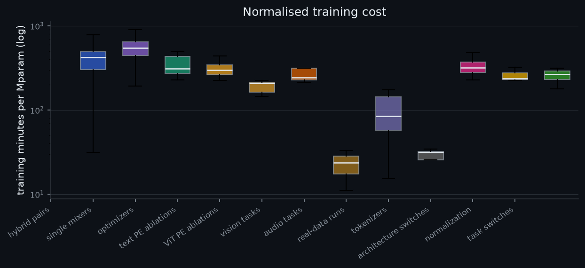
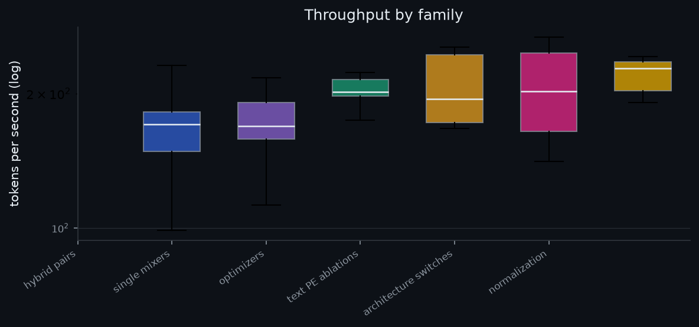
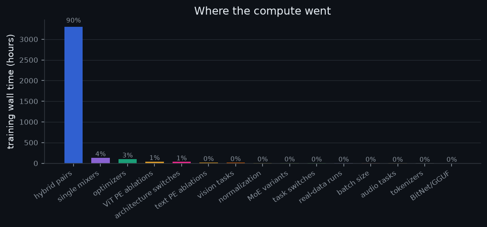
The hybrid pairs absorb 90.0% of the 3,668 hours (3,301 h); the single-mixer baselines take 3.6% and every other family less than 3%. Vision and audio are cheap in wall time despite their long schedules because their steps are short, and the throughput panel says the same in tokens per second: the MLM pairs run at a median of 171 tokens/s.Los pares híbridos absorben el 90.0 % de las 3,668 horas (3,301 h); las líneas base de un solo mixer toman el 3.6 % y todas las demás familias menos del 3 %. Visión y audio son baratas en tiempo de pared pese a sus calendarios largos porque sus pasos son cortos, y el panel de rendimiento dice lo mismo en tokens por segundo: los pares MLM corren a una mediana de 171 tokens/s.
6 · Inference and quantization6 · Inferencia y cuantización
662 configurations produced Hugging Face rows: 653 MLM pairs, four causal-LM runs and one text-classification run. Each was exported unquantized (hf_none) and re-exported with three codecs at two loader runtimes (q8_0, q4_0, i2_s, each in v1 and v2). The two runtimes sampled different mask positions — only 3.5% of the v1 keys coincide with the baseline — so v1 cannot be paired; the clean comparison is the v2 family, which reuses the baseline masks for 99.4% of the keys. This is a harness property, not a model property.662 configuraciones produjeron filas de Hugging Face: 653 pares MLM, cuatro corridas de LM causal y una de clasificación de texto. Cada una se exportó sin cuantizar (hf_none) y se reexportó con tres códecs en dos runtimes de carga (q8_0, q4_0, i2_s, cada uno en v1 y v2). Los dos runtimes muestrearon posiciones de máscara distintas — solo el 3,5 % de las claves de v1 coinciden con la base — así que v1 no puede emparejarse; la comparación limpia es la familia v2, que reutiliza las máscaras de la base en el 99,4 % de las claves. Esto es una propiedad del arnés, no de los modelos.
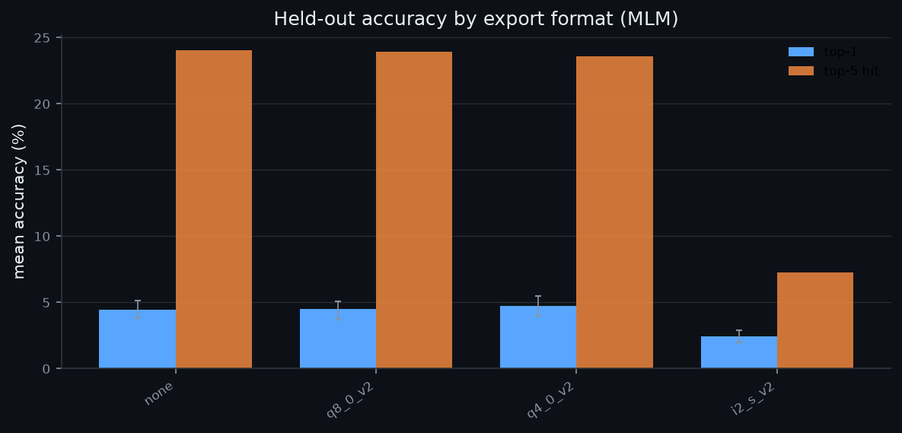
| Format | n | Top-1 | Top-5 | Δ (pp)Δ (pp) | WorsePeor |
|---|---|---|---|---|---|
none | 653 | 4.46 | 24.0 | 0.000 | 0.0% |
q8_0 v1 | 653 | 2.87 | 14.4 | -1.663 | 22.2% |
q8_0 v2 | 653 | 4.50 | 23.9 | +0.066 | 0.2% |
q4_0 v1 | 653 | 2.72 | 14.1 | -1.816 | 22.2% |
q4_0 v2 | 653 | 4.76 | 23.6 | +0.328 | 1.7% |
i2_s v1 | 653 | 0.83 | 3.2 | -3.719 | 24.2% |
i2_s v2 | 653 | 2.41 | 7.2 | -2.035 | 18.7% |
8 and 4 bits are essentially free: q8_0_v2 changes the top-1 by +0.07 pp with 99.2% of the pairs unchanged and only 0.2% worse; q4_0_v2 changes it by +0.33 pp with 94.5% unchanged and 1.7% worse. The 2-bit codec is the exception: -2.03 pp on average, 73.2% of the pairs intact and 18.7% degraded.8 y 4 bits son esencialmente gratis: q8_0_v2 cambia el top-1 en +0.07 pp con el 99.2 % de los pares sin cambios y solo el 0.2 % peor; q4_0_v2 lo cambia en +0.33 pp con el 94.5 % sin cambios y el 1.7 % peor. El códec de 2 bits es la excepción: -2.03 pp de media, 73.2 % de los pares intactos y 18.7 % degradados.
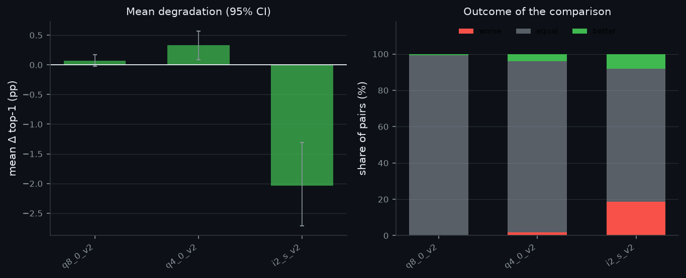
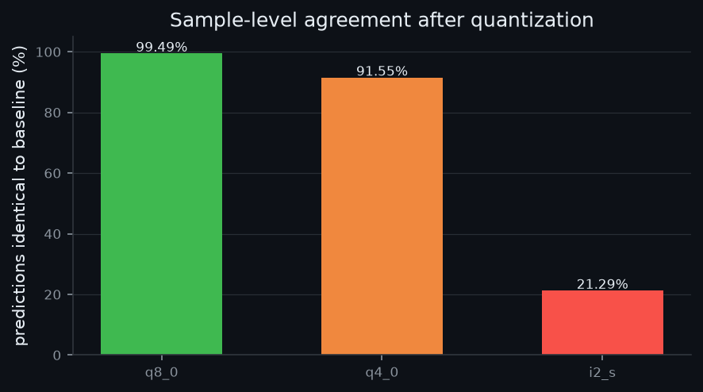
The sample-level view is sharper. Matching each quantized prediction to the baseline prediction of the same mask, q8_0_v2 agrees on 99.5% of the samples (95% CI 99.4–99.7), q4_0_v2 on 91.8% and i2_s_v2 on only 20.8%. The 2-bit model is not a slightly worse copy: it is a different model that happens to preserve the aggregate top-1 on pairs whose baseline accuracy was already near zero. Parameter count does not predict robustness (ρ = -0.11).La vista por muestra es más nítida. Emparejando cada predicción cuantizada con la predicción base de la misma máscara, q8_0_v2 coincide en el 99.5 % de las muestras (IC 95 % 99.4–99.7), q4_0_v2 en el 91.8 % y i2_s_v2 en solo el 20.8 %. El modelo de 2 bits no es una copia algo peor: es un modelo distinto que casualmente conserva el top-1 agregado en pares cuya exactitud base ya era casi cero. El número de parámetros no predice la robustez (ρ = -0.11).
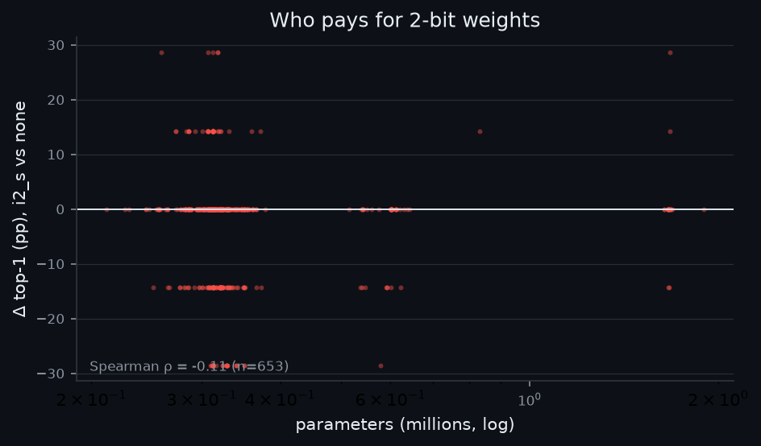
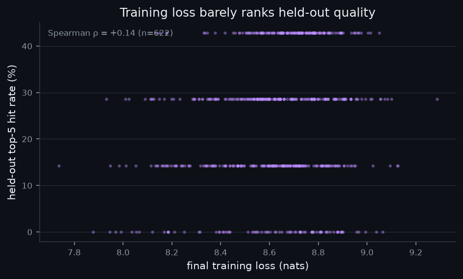
The warning of Round 2 survives the complete grid: training loss and held-out quality are almost uncorrelated (ρ = +0.14). Read the atlas as a map of learning speed and stability, not as a leaderboard.La advertencia de la ronda 2 sobrevive a la rejilla completa: pérdida de entrenamiento y calidad retenida están casi incorrelacionadas (ρ = +0.14). Lee el atlas como un mapa de velocidad y estabilidad de aprendizaje, no como una tabla de líderes.
7 · Reliability and failure taxonomy7 · Fiabilidad y taxonomía de fallos
Training is reliable: 1,643 of 1,653 runs succeed (0.6% failure rate). All ten failures are hybrid pairs that contain engram; eight exit with code 1 and two with code 134 (SIGABRT), and no other family fails. The Transformers export never fails (4,686 records), inference evaluation fails once, and the only systemic problem is the deploy stage excluded above.El entrenamiento es fiable: 1,643 de 1,653 corridas terminan bien (tasa de fallo 0.6 %). Los diez fallos son pares híbridos que contienen engram; ocho salen con código 1 y dos con código 134 (SIGABRT), y ninguna otra familia falla. La exportación a Transformers no falla nunca (4.686 registros), la evaluación de inferencia falla una vez y el único problema sistémico es la etapa de despliegue excluida arriba.
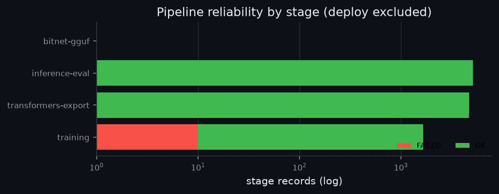
| FamilyFamilia | n | FailedFallos | RateTasa |
|---|---|---|---|
| hybrid pairspares híbridos | 1,431 | 10 | 0.7% |
| audio taskstareas de audio | 4 | 0 | 0.0% |
| MoE variantsvariantes MoE | 17 | 0 | 0.0% |
| normalizationnormalización | 6 | 0 | 0.0% |
| optimizersoptimizadores | 39 | 0 | 0.0% |
| text PE ablationsablaciones de PE de texto | 12 | 0 | 0.0% |
| real-data runsejecuciones con datos reales | 8 | 0 | 0.0% |
| single mixersmixers únicos | 54 | 0 | 0.0% |
| architecture switchesinterruptores de arquitectura | 23 | 0 | 0.0% |
| task switchesinterruptores de tarea | 4 | 0 | 0.0% |
| tokenizerstokenizadores | 4 | 0 | 0.0% |
| vision taskstareas de visión | 9 | 0 | 0.0% |
| ViT PE ablationsablaciones de PE del ViT | 39 | 0 | 0.0% |
8 · Correlations8 · Correlaciones
The Spearman matrix over the hybrid pairs shows that the strongest non-trivial correlations describe the schedule rather than the architecture: training time grows with the number of epochs (+0.74), throughput is almost the inverse of step time (-0.95) and mean loss falls as the schedule lengthens (-0.76). The parameter count correlates moderately with loss (-0.42) and gradient magnitude (+0.47) and weakly with wall time (+0.23).La matriz de Spearman sobre los pares híbridos muestra que las correlaciones fuertes no triviales describen el calendario y no la arquitectura: el tiempo de entrenamiento crece con el número de épocas (+0,74), el rendimiento es casi el inverso del tiempo por paso (-0,95) y la pérdida media baja a medida que el calendario se alarga (-0,76). El número de parámetros correlaciona moderadamente con la pérdida (-0,42) y con la magnitud del gradiente (+0,47) y débilmente con el tiempo de pared (+0,23).
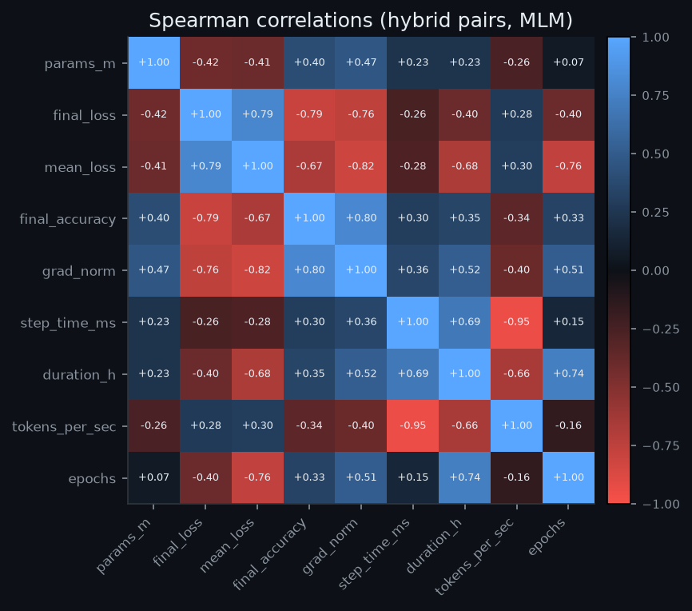
9 · The interactive atlas9 · El atlas interactivo
One cell per hybrid pair: rows are the first mixer (A), columns the second (B), and the upper triangle holds the 1,431 measured pairs. Pick a metric and hover a cell; the ten engram pairs that crash are shown as empty cells. The colour always runs from best (green) to worst (red) for the selected metric.Una celda por par híbrido: las filas son el primer mixer (A), las columnas el segundo (B), y el triángulo superior contiene los 1,431 pares medidos. Elige una métrica y pasa el cursor por una celda; los diez pares con engram que fallan aparecen como celdas vacías. El color siempre va del mejor (verde) al peor (rojo) para la métrica elegida.
Ten best pairsDiez mejores pares
Ten worst pairsDiez peores pares
The role effect: A vs BEl efecto del rol: A vs B
Each point is one mixer: its median loss when it sits in layer 0 (A) against its median loss when it sits in layer 1 (B). Points off the diagonal are role-sensitive; the B axis is the wider one (0.882 nats against 0.804), which is the quantitative form of “the second mixer is the lever”.Cada punto es un mixer: su pérdida mediana cuando ocupa la capa 0 (A) frente a su pérdida mediana cuando ocupa la capa 1 (B). Los puntos fuera de la diagonal son sensibles al rol; el eje B es el más ancho (0.882 nats frente a 0.804), que es la forma cuantitativa de “el segundo mixer es la palanca”.
Mixer ranking by median lossRanking de mixers por pérdida mediana
10 · Data and reproducibility10 · Datos y reproducibilidad
Two files are published next to this page: atlas.csv (one row per hybrid pair: loss, parameters, duration, top-1 and top-5) and mixers.csv (one row per mixer: median loss and parameters). The full per-run tables stay in the experiment tree and are summarised in the appendix of the paper.Junto a esta página se publican dos archivos: atlas.csv (una fila por par híbrido: pérdida, parámetros, duración, top-1 y top-5) y mixers.csv (una fila por mixer: pérdida y parámetros medianos). Las tablas completas por corrida quedan en el árbol del experimento y se resumen en el apéndice del paper.
Rebuild: python experimentos/to_csv.py 3 && python experimentos/3/report/build_data.py && python experimentos/3/report/make_site.py. The only slow step is the single streaming pass over the 6.6 GB per-step log (about ten minutes); everything else runs in seconds on CPU.Reconstruir: python experimentos/to_csv.py 3 && python experimentos/3/report/build_data.py && python experimentos/3/report/make_site.py. El único paso lento es la pasada única sobre el log por paso de 6,6 GB (unos diez minutos); el resto corre en segundos en CPU.
11 · What the complete grid changes11 · Qué cambia la rejilla completa
Round 2 measured two thirds of the grid; Round 3 measures all 1,431 cells. The rankings that survive — the second mixer as the lever, the weakness of scale, the loss/quality gap — survive because the missing third of the grid could not have hidden a different answer.La ronda 2 midió dos tercios de la rejilla; la ronda 3 mide las 1,431 celdas. Los rankings que sobreviven —el segundo mixer como palanca, la debilidad de la escala, la brecha pérdida/calidad— sobreviven porque el tercio faltante no podía esconder otra respuesta.
Training time grows with epochs and barely with parameters; mean loss falls as the schedule lengthens. Any cross-family reading of the loss must control for the number of epochs, which is why this page reports the budget next to every family.El tiempo de entrenamiento crece con las épocas y apenas con los parámetros; la pérdida media baja a medida que el calendario se alarga. Cualquier lectura transversal de la pérdida debe controlar el número de épocas, y por eso esta página reporta el presupuesto junto a cada familia.
The v2 runtime keeps 99.5% and 91.8% of the predictions at 8 and 4 bits; 2 bits keeps 20.8% and costs 2.03 pp of top-1. Two bits is a different model, not a smaller file.El runtime v2 conserva el 99.5 % y el 91.8 % de las predicciones a 8 y 4 bits; 2 bits conserva el 20.8 % y cuesta 2.03 pp de top-1. Dos bits es otro modelo, no un archivo más pequeño.
The deploy bug is fixed and covered by a regression test, but this round's 822 failures were excluded. The next round should re-measure deployment on the same grid before drawing conclusions about the deployment path.El error de despliegue está corregido y cubierto por una prueba de regresión, pero los 822 fallos de esta ronda quedaron excluidos. La próxima ronda debería volver a medir el despliegue sobre la misma rejilla antes de concluir sobre esa ruta.
The loss/quality rank correlation is +0.14: the atlas ranks learning speed, not model quality. A larger held-out set with per-token log-likelihood is the next measurement that would turn the atlas into a ranking.La correlación de rango pérdida/calidad es +0.14: el atlas ordena velocidad de aprendizaje, no calidad de modelo. Un conjunto retenido más grande con log-verosimilitud por token es la próxima medición que convertiría el atlas en un ranking.